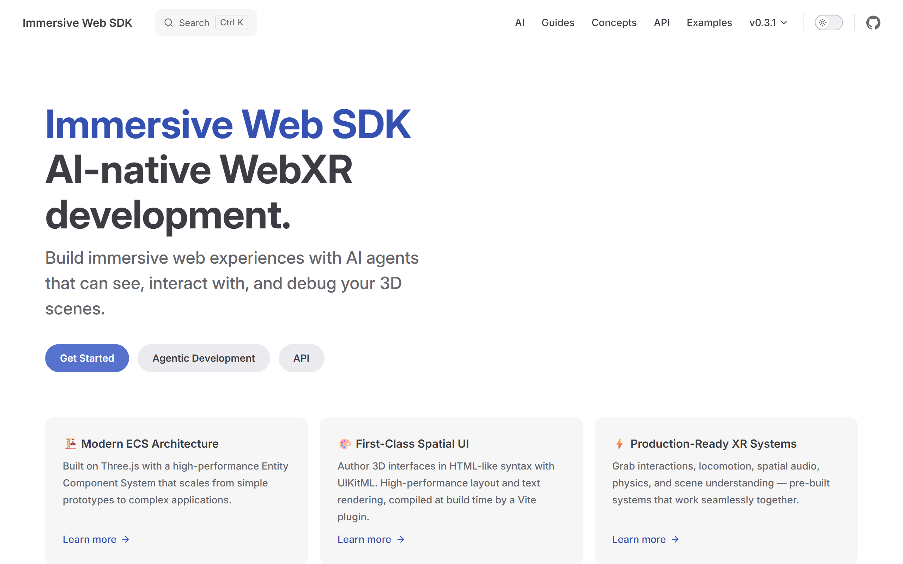
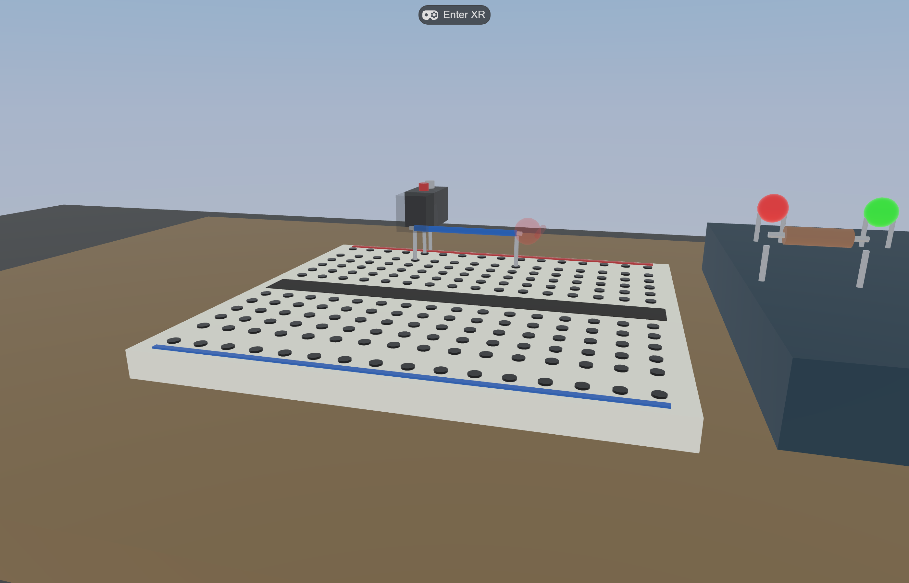
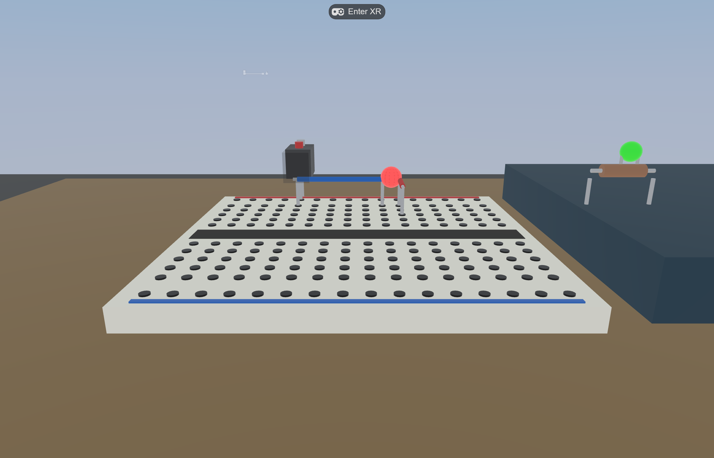
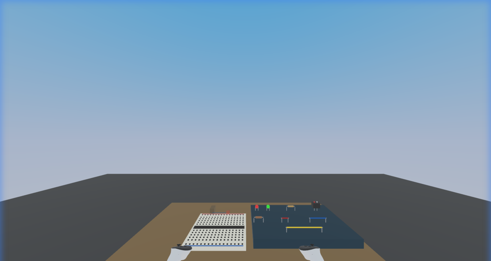
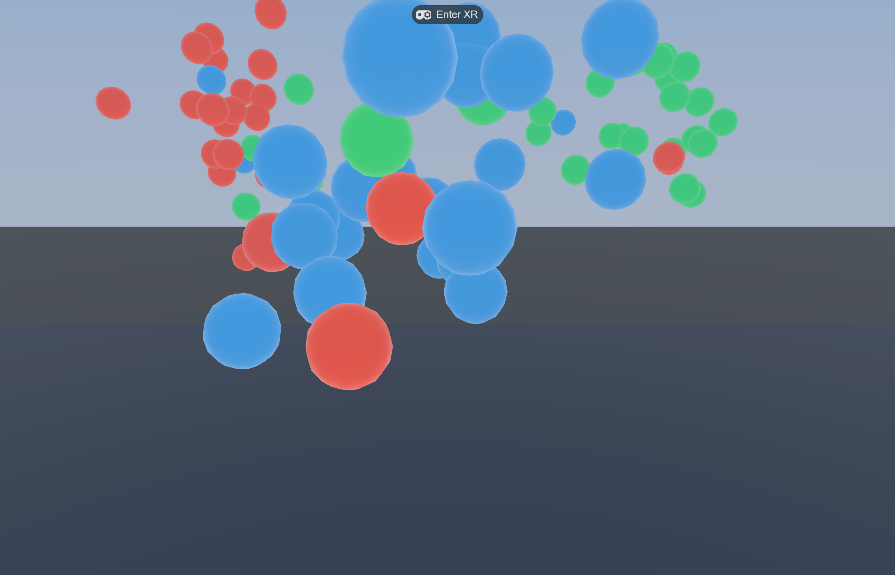

A practical pattern catalog for building VR/MR experiences with humans-in-the-loop and large language models — drawn from public Unity demos and the author’s own IWSDK research projects. Pick the patterns that fit your stack; combine them.
By Jewoong Moon · jmoon23@ua.edu · College of Education, The University of Alabama · Living document — PRs welcome
What an agentic-built WebXR research apparatus actually looks like — Virtual Makerspace running in IWSDK. The breadboard, the eight grabbable parts, the step HUD, and the idle robot were all assembled and tuned through the patterns in this guide.
§ 1Why this guide
The agentic XR conversation has moved fast in 2026. Meta’s DevRel ships full VR/MR games end-to-end with Claude Code + Unity AI Assistant. WebXR developers wire IWSDK’s ECS into emulator MCPs and step through frames from the chat window. None of this is a single tool decision — it is a small set of patterns that show up in every successful workflow, regardless of engine.
This guide extracts those patterns. It is not a comparison between Unity and the web; it is a catalog of techniques you can mix and match. Every pattern is shown twice: once as it appears in a Unity-side demo (Dilmer Valecillos’ GDC 2026 basketball build) and once as it appears in the author’s own IWSDK projects (Virtual Makerspace, Circuit Playground). The point is the underlying move, not the brand of the tool.
scope
Practical onboarding for researchers and small-team developers who already know basic VR concepts and want to ship faster with LLMs in the loop. Not a substitute for Meta’s official docs, IWSDK’s reference, or Unity’s manuals — those remain the source of truth for the APIs themselves.
§ 2How to read it
Three reading paths depending on where you are starting from:
Tick patterns you already use; flag ones you don’t
Each pattern card shows the rule, why it matters, and how it shows up in two stacks (Unity-side and IWSDK-side) — plus a “when not to apply” line so you don’t over-engineer.
§ 3Quick start — your first agentic XR session
If you have already cloned an IWSDK project (e.g. the official scaffold or Virtual Makerspace) and have Claude Code installed, the following 20-minute walkthrough exercises five of the patterns at once. Skip ahead to the catalog if you prefer to read first.
Open the project in Claude Code. Read CLAUDE.md if present — it encodes pitfalls and conventions for the project (pattern 01).
Run the tool check (pattern 02) as your literal first message:
What custom tools do you have available?
Group by MCP server. If any are missing,
stop and tell me which.
Confirm the dev server. If the agent reports the IWER MCP is connected, the session is already running — do not start another. Otherwise npm run dev in a separate terminal and re-check.
Smoke-test one MCP call (pattern 02 deepening): ask the agent to take a screenshot, then describe what it sees:
Call browser_screenshot. In one paragraph,
describe what you see in the image and
which entity is in the foreground.
Anything wrong here (missing tool, blank image, wrong scene) blocks every other pattern — fix it before continuing.
Attach a plan file. Pick a small task (“add a new colour to the LED palette”) and write a 5-line plan in docs/plans/led-palette.md with goal, components touched, telemetry events emitted. In chat: “Read docs/plans/led-palette.md and implement it; ask before editing the telemetry schema.”
Verify with a screenshot loop (pattern 05). After the agent reports done, ask for a fresh browser_screenshot and a one-sentence visual diff vs. the previous one.
Stop and human-check. Read the diff yourself. If the change touched a system you weren’t expecting (e.g. scene.add snuck in despite CLAUDE.md) revert and re-prompt with the rule made explicit.
first-session goal
The point isn’t to ship a feature. It’s to confirm the loop runs end-to-end: project context loaded → tools available → small plan executed → visual verified → you reviewed the diff. Once that loop is reliable in 20 minutes, you can scale up to 2-hour features.
§ 4Pattern catalog
Eleven patterns organized roughly from the start of a session to the end, with the meta-pattern (agent reviewing agent) closing the catalog. None is mandatory; each is independently useful. The first three are the highest-leverage if you are picking only a few; pattern 11 unlocks the next scale of work.
Pattern 01
Plan file as context
Iterate a markdown plan with the LLM first; pass it as a reference in the build prompt instead of describing the plan inline.
Complex structures — a basketball hoop with backboard, bracket, rim, and net, or a breadboard with 192 sockets and snap rules — produce inconsistent output when described in chat. Build the plan as a separate markdown file with the LLM in a quick session, save it, then in the build prompt say “implement this from the file.” The agent reads it as authoritative spec and builds the whole structure with internal consistency.
Unity stack Dilmer demo
Author iterated basketball-hoop.md with Claude in advance. Build prompt:
Can you implement a basketball
hoop using the details from
this file?
One pass — backboard, bracket, rim, and net all produced with consistent material style.
IWSDK stack VM
Plan files for docs/mvp-scope.md (telemetry schema, scene entities, interaction verbs) and docs/pedagogy-charter.md (theoretical commitments) are passed as context for new ECS components and systems. The pedagogy charter especially prevents agent-suggested gamification creep.
When not to apply: trivial single-file changes; one-off bug fixes; UI tweaks where the plan would be longer than the change.
Pattern 02
First-prompt tool check
Open every working session by asking the agent which custom tools it can see. MCP registration silently fails more than you think.
MCP servers can register and yet their tools fail to appear in the agent’s tool list — config drift, version mismatch, or server crash. The cheapest way to catch this is to make the first message of every session a tool inventory. If Meta’s VR custom tools are missing on the Unity side, or IWER on the IWSDK side, fix it before writing one line of code.
Equivalent connectivity check before doing anything:
mcp__iwsdk-dev-mcp__
xr_get_session_status
If this returns a successful connection, the dev server is already running — do not start another. If it errors, restart npm run dev and retry before any other action.
When not to apply: read-only sessions where you only browse code or docs without invoking custom tools.
Five-minute MCP smoke test
Tools showing up in the inventory does not mean they work. Run a tiny end-to-end probe before trusting them on real work:
Connectivity — xr_get_session_status (or the equivalent on your stack). Should return a session object, not error.
Read — scene_get_hierarchy or browser_screenshot. Should return a non-empty payload.
Write — xr_set_transform moving the headset 0.1 m, then scene_get_hierarchy to verify the scene didn’t crash.
Round-trip — set a known transform, read it back. Values should match within a tolerance.
Cleanup — restore default state. Some MCPs leave the world in an experiment-specific pose otherwise.
If any step fails, treat the MCP as unavailable for this session and log the failure for later. Continuing past a half-broken MCP gives you confident-looking results that don’t reflect reality.
Pattern 03
Domain knowledge in an MCP
Don’t spend context tokens making the LLM recall what your platform’s docs already know — front it with an MCP that searches authoritative sources.
The model can guess how Quest passthrough works, but it will be wrong half the time and slow always. An MCP that semantically searches your platform docs gives the agent a primary source instead of a hallucinated one — better answers, faster session, fewer confidently-wrong rabbit holes. The same logic applies to your own domain knowledge (curriculum, experiment design, code conventions): expose it through an MCP rather than hoping context survives compaction.
Unity stack HZDB
Meta Horizon Developer Hub MCP exposes the entire Meta Quest documentation set plus connected-device inspection. Sample queries:
“How do I implement passthrough in Unity?”
“What is the Quest 3 battery level?”
“Search Meta’s 3D model library for ‘office chair’”
IWSDK stack IWSDK-RAG
Semantic code search across @iwsdk/core, elics, and super-three. Returns actual source — not summaries — so the answer is verifiable.
mcp__iwsdk-rag-local__
search_code: "how to subscribe
to query qualify events"
For your own project: compile your codebook / R-script library / pedagogy charter into a small RAG MCP and expose it the same way.
When not to apply: exploratory sessions where you want the model’s best guess to challenge your assumptions; brainstorming.

The kind of source the agent should be reading from: iwsdk.dev with version, navigation, and feature cards. An MCP that semantically searches a site like this beats letting the model paraphrase from training data — especially because the SDK explicitly positions itself as “AI-native WebXR development.”
Building your own domain MCP
Most readers want to expose their own domain knowledge — a curriculum, a codebook, a pedagogy charter, a research-protocol manual. The cheapest path:
Start with a directory of markdown. Even a flat docs/ folder is enough to RAG.
Use a generic local MCP server — e.g. an fs-mcp that exposes search across a path, or one of the open-source RAG MCP templates listed at the Model Context Protocol directory. Configure it to index your folder.
Wire it into Claude Code via ~/.claude/mcp_servers.json; the agent will list it under its tools after restart.
Smoke-test with the inventory check (pattern 02): the new tool should appear with a meaningful name.
Quality-control the retrieval. Ask deliberately ambiguous questions; if the model invents a section that isn’t in your docs, the indexer is too lossy — raise chunk size, lower top-k, or add structural metadata.
For research projects: a small RAG over your docs/pedagogy-charter.md + experimental-protocol PDFs gives the agent reviewer-anchored constraints without re-pasting them every session. The author plans a follow-up guide on this; until then, the IWSDK-RAG implementation in node_modules/@felixtz/iwsdk-rag-mcp is a working public example to read.
Pattern 04
Plan mode vs agent mode
Use plan mode for actions with large blast radius; use agent mode for additive, easily-reversible work.
Both Claude Code and Unity AI Assistant let you preview the planned actions before they execute. Use that for anything that touches build settings, audio managers, scene graph wiring, or the data schema — the cost of reviewing a plan is two minutes, the cost of unwinding a wrongly-applied refactor is an afternoon. For additive work like adding a new component to an entity, agent mode is fine.
Unity stack
Audio manager design (multi-source, BGM + SFX + event sounds with priority): plan mode → review → execute. Adding a single rotator script: agent mode.
IWSDK stack
Telemetry schema changes, ECS component refactors, manifest changes: plan mode. Spawning a new entity into an existing scene: agent mode. Anything that touches World.create({ features }): plan mode (a missing prerequisite drops you through the floor).
When not to apply: obvious one-line fixes; plan mode adds latency and is annoying when the action is unambiguous.
Three-question decision checklist
If any of the following is yes, use plan mode:
Does this touch shared state — build settings, scene root, audio bus, environment components, the level entity?
Does this change a contract — the telemetry schema, an ECS component definition, a manifest, a public API?
Does this affect what the agent will do next? If the next prompt branches on whether this step happened (“now wire that up to the audio manager you just built”), reviewing the plan first prevents a chain of dependent mistakes.
If all three are no, agent mode is fine.
Pattern 05
Screenshot validation loop
After every visual change, take a screenshot and feed it back to the agent. Trust the eye, not the diff.
Code that compiles and runs can still produce wrong output: a misplaced anchor, a transparent material, a Z-fight. The fix is to give the agent vision in the loop. Unity AI Assistant captures the editor view automatically after each action; on the web you call browser_screenshot through the IWER MCP. Either way, the agent sees what you see and can correct without you typing the description.
The closed loop is what makes agentic visual work feel different from chat-driven coding.
Unity stack
Unity AI Assistant captures the scene view automatically after each action and feeds the image back. No extra prompt needed.
IWSDK stack
Manual but cheap:
mcp__iwsdk-dev-mcp__
browser_screenshot
Combine with scene_get_hierarchy for ground-truth entity positions when the screenshot is ambiguous.
When not to apply: pure backend / data-pipeline work where there is no visual; performance tuning where you should be reading the profiler instead.

What the agent sees on a screenshot pass: mid-assembly state, partial connections visible, target circuit not yet closed. Combined with a hierarchy query (scene_get_hierarchy) the agent can reconcile visual ground truth with ECS state in one round trip.
vision-model limits
LLM vision is reliable for which entity is where and does the layout look broken. It is unreliable for pixel-precise alignment, very small text (HUD timer at 8 px), fast motion (frame between gestures), and colour accuracy in low light. For these, pair the screenshot with a structured query — scene_get_object_transform, ecs_query_entity — and treat the image as a sanity check, not as the source of truth.
Pattern 06
Force prefab / entity spawns
Tell the agent explicitly to spawn from project assets, not to construct primitives at runtime. You will want to tweak it later.
Agents default to building from primitives because primitives need no asset dependency — but the resulting object is invisible to the inspector and impossible to edit by hand. Forcing prefab / entity-spawn semantics keeps every agent-generated artifact tweakable through the normal authoring path.
Unity stack
Default Dilmer build had ball launcher creating a primitive at runtime. Author corrected: “use the project prefab.” Result: ball mesh now editable in inspector, physics tunable without re-prompting.
IWSDK stack
Equivalent rule: prefer entity spawners with declared components, not scene.add(mesh). The author’s spawn-components.ts does the right thing — every part starts as a properly-componented entity, queryable by every system.
When not to apply: truly throwaway primitives for visual debugging (a red box marking a target).
VM’s component tray — all eight parts spawned as proper entities (not runtime primitives). Each is independently inspectable, tunable in the editor, and queryable by every system. The agent was instructed to spawn from the components manifest, not to fabricate at runtime.
Pattern 07
ECS-aware debugging MCP
For continuous behavior — physics, animation, frame-time bugs — give the agent a pause/step/snapshot/diff vocabulary, not just console logs.
You can’t debug something that happens in 11–14 ms by reading after the fact. The IWER MCP exposes ECS pause / step / snapshot / diff so the agent can freeze the world, advance one frame, snapshot, advance another, and diff — finding which component changed where. Unity has equivalent runtime debugging through its profiler integration; the principle is the same.
Unity stack
Profiler + Unity AI agent can query frame stats, GC allocations, draw calls. Not as ECS-fine-grained as IWSDK but covers the perf use case.
Find which system mutated which component field on a single frame. Compose with ecs_toggle_system to isolate the offender.
When not to apply: bugs that reproduce reliably from a fresh load — print debugging is faster.
Pattern 08
Telemetry-first design
Decide what events are emitted before you decide what scenes look like. Agentic builds drift; the telemetry contract holds them in place.
If you don’t commit to a telemetry schema early, the agent will happily add features that no measurement instrument captures. With a schema in docs/ the agent treats it as an interface contract — every new interaction emits a known event, and quantitative analysis stays possible. This applies to research projects (the obvious case) and consumer products alike (analytics, A/B tests, telemetry-driven QA).
Unity stack
Equivalent: define a Unity Analytics event taxonomy or a custom event bus, document it in markdown, pass it to the agent. New gameplay features wire into the bus, not new bespoke logging.
IWSDK stack VM example
Schema lives in docs/mvp-scope.md. Every event shares one envelope (event_id, session_id, frame_time_ms, optional poses) — the schema specifies UUID v7 for time ordering, the implementation uses crypto.randomUUID() (v4) until a v7 library is wired in. Agent-added systems emit events from the existing catalog; error_recovery on undo, socket_connect on snap, circuit_state_change on topology delta. NDJSON export at session_end.
When not to apply: throwaway prototypes you will not ship and not study.
HoverPreviewSystem in action: the green markers fire from the same telemetry hooks that emit hover_target events to the analysis log. Telemetry-first design means a learner-facing affordance and an analysis signal share one code path — no agent-added drift between what the participant sees and what gets measured.
Telemetry → analysis bridge
A schema is only useful if the analysis pipeline can read it. NDJSON exports drop straight into:
Sequence mining — treat event_type as the alphabet, session_id as the unit. See the author’s Sequence Mining Blueprint (TNA, LSA, SPM, HMM) for end-to-end R templates.
Ordered Network Analysis — group events by participant and condition, encode co-occurrence within a sliding window. The ONA in Practice guide covers the agentic-figure workflow.
Knowledge tracing — if the task has scoreable steps, step_advance + correctness become the input; Knowledge Tracing Blueprint covers BKT / DKT / R / Python.
Stealth assessment — backward-design from outcome to ECD evidence; see the Stealth Assessment draft for the full pipeline.
The point: design the telemetry schema once, then pick the analysis lens later. The four guides above all consume the same NDJSON shape.
Pattern 09
Sub-skills for verbs
Make the recurring verbs of your stack into named slash commands. The agent stops re-deriving how to do common things.
If you frequently ask the agent to add a grab interaction, build a UI panel, or step through physics, those are verbs in your stack. Encode them as slash commands with their own SKILL.md describing when and how to use them. The agent loads the right context only when the right verb is invoked, and your prompt becomes a single token instead of a paragraph.
Unity stack
Encode the verbs you actually repeat as Claude Code slash commands — e.g. a camera-rig setup command, a grabbable-attachment command, a passthrough-toggle command. The Dilmer demo doesn’t showcase user-defined slash commands directly, but the same Claude Code skill mechanism is available in any project; the encoded skills load context only when invoked.
IWSDK stack VM uses 6
Live in the project today (shipped with IWSDK’s scaffolder):
/iwsdk-planner — feature planning + best practices
/iwsdk-grab — One/Two-hand grab
/iwsdk-ray — DistanceGrabbable + Interactable
/iwsdk-ui — UIKitML + ScreenSpace
/iwsdk-debug — pause/step/snapshot/diff
/iwsdk-physics — PhysicsBody + PhysicsShape
When not to apply: one-time exploratory tasks that will not recur. Sub-skills that get used once a year are technical debt.
Sample SKILL.md (one-page minimum)
A workable Claude Code skill is shorter than people expect. The structure below is what the author uses for IWSDK sub-skills — copy, adapt, drop into ~/.claude/skills/<skill-name>/SKILL.md:
---
description: One-line trigger for when this skill applies.
Used by Claude Code's matcher.
argument-hint: "[optional positional arg]"
---
You are running the **/<skill-name>** workflow. The user typed
`/<skill-name> $ARGUMENTS` because they want X.
## Pipeline
1. Confirm prerequisite: e.g. dev server running, MCP healthy.
2. Read the relevant project files into context (list 2-3).
3. Apply the verb: do exactly the recurring task this skill exists for.
4. Verify with the standard check (screenshot, type-check, test).
## House rules
- Project conventions to enforce (e.g. "import Three from @iwsdk/core,
never from 'three'").
- Anti-patterns to refuse.
## Output contract
What artifacts this skill produces, where they go, and how the user
verifies success.
Six lines of YAML, twenty lines of body, and the skill is reusable. Most of the value is the matcher description (so the right skill loads automatically) and the house-rule list (so the agent doesn’t re-derive your conventions every session).
Pattern 10
On-device verification
Check the actual headset state from the chat window. The emulator agrees with reality less often than you hope.
Emulators (IWER for the web, XR Simulator for Unity) run a faithful approximation, but headsets routinely behave differently — battery, thermal throttling, hand-tracking quality, passthrough alignment. After every milestone build, query the connected Quest from the agent: battery, version, recent logcat. Catches a class of bugs that “works on the laptop” misses entirely.
Same MCP exposes push_file/pull_file for build APKs and crash dumps.
IWSDK stack
Same HZDB tools work — IWSDK is browser-deployed, but the headset still runs the page in Quest Browser. device_battery tells you if you’re about to burn the headset under thermals; get_device_logcat with --tag=Browser catches Chromium-side issues that don’t surface in your dev console.
When not to apply: non-immersive web mode work; every-frame iterations where stopping to check the headset would dominate the cycle.
Pattern 11
Agent reviewing agent
Once the work fits in one prompt, the next bottleneck is review. Make a second agent read the first agent’s output against your spec.
Single-agent loops are fine for additive work. The moment the change touches the ECS schema, telemetry contract, or pedagogy charter, the most reliable next step is a different agent — with no investment in the implementation choice — reviewing the diff against the same spec the implementer was working from. The reviewer agent is more skeptical because it doesn’t feel the sunk cost of the build.
Unity stack
Equivalent: spawn a sub-agent (Claude Code Agent tool) with the role “senior Unity reviewer”, feeding it the changed file list, the plan markdown, and the relevant CLAUDE.md sections. Ask it to flag deviations from house rules, performance footguns, and gameplay-feel regressions.
IWSDK stack VM ships one
Virtual Makerspace ships an iwsdk-project-code-reviewer sub-agent (declared in CLAUDE.md) that reviews changes for ECS patterns, the 11-14 ms frame budget, the Three.js import rule, and adherence to the pedagogy charter. Invocation is one prompt:
Use the iwsdk-project-code-reviewer agent
to review the last commit against
docs/pedagogy-charter.md.
The reviewer either approves or returns a numbered list of issues; the implementer agent then takes only those in a follow-up turn.
Parallel exploration with worktrees
Same idea, broader scope: when there are two plausible designs (capsule avatars vs. humanoid; FCFS vs. tug-takeover for grab conflicts), spawn one agent per branch with git worktree, let each implement its branch in isolation, then have a third reviewer agent compare. The cost is roughly 2× tokens for the implementations + 1× for the comparison; the savings are weeks of human-mediated A/B prototyping.
When not to apply: straightforward bug fixes; one-line changes; sessions where review latency would dominate (you’ll be slower with the reviewer than without).
§ 5Tooling spectrum
Five stacks with different deployment, license, and openness trade-offs. Pick by where the build needs to run and what you want to control directly.
Unity AI native
Native
Unity AI Assistant in editor + Claude Code CLI + Meta MCP Extensions + HZDB. Highest agent productivity for native Quest builds; private beta licensing as of 2026-05.
Editor: Unity 2022 LTS+ Agents: Unity AI · Claude Code MCPs: Meta MCP Ext · HZDB Deploy: Quest native APK (Horizon Store)
IWSDK
Web
Meta’s open-source WebXR framework — ECS + signals + Three.js + IWER emulator + IWSDK-RAG MCP. Browser deployment, zero install for participants. Official self-description: “AI-native WebXR development” (iwsdk.dev). Used by Virtual Makerspace and Circuit Playground.
Framework: @iwsdk/core 0.3.x Agents: Claude Code MCPs: IWSDK-RAG · IWER · HZDB Deploy: any HTTPS host → Quest Browser
Three.js bare
Lean
Direct Three.js + WebXRManager + custom scene graph. Most control, fewest dependencies, no opinions. Best for one-shot interactives and demos where IWSDK’s ECS would be overkill.
Framework: three (vanilla) Agents: Claude Code MCPs: Playwright (custom) Deploy: any static host → Quest Browser
Other stacks the author has not deployed personally — included for orientation, not endorsement: Three.js bare (vanilla three + WebXRManager; trade IWSDK’s ECS for full control); Babylon.js (built-in WebXR helpers, node-material editor; mature engine, but the IWSDK-equivalent ECS-aware MCP toolchain is not something the author has tested); Unreal Engine (high-fidelity VR; agentic tooling is less mature than Unity AI in 2026-05 and the author has no first-hand workflow data); Unity authoring → web runtime (Unity + Meta Spatial Editor for content, then glTF/GLXF export to IWSDK or Three.js for browser deploy — valid in principle, two stacks to maintain). For each of these, patterns 01–04 transfer; patterns 05, 07, 10 depend on stack-specific MCPs you would need to source or build yourself.
§ 6Case studies
Three end-to-end workflows showing the patterns combined. Pick the one closest to your project shape.
Meta DevRel Dilmer Valecillos shipped a complete MR basketball game from scratch in roughly 17 video minutes using Unity AI Assistant + Claude Code (in-editor) + Meta MCP Extensions + HZDB. The whole flow is patterns 01, 02, 03, 05, 06 stacked.
Build sequence
Setup: Asset Store fetches Meta SDK, OpenXR Meta XR feature group, Oculus Touch profile, Android manifest.
Tool check (pattern 02): “What custom tools are available?” — confirms create_camera_rig et al are visible.
Plan injection (pattern 01): pre-iterated basketball-hoop.md passed as reference; backboard / bracket / rim / net produced consistently in one pass.
Build loop: ball launcher prefab (pattern 06 correction), trail renderer for fire effect, 30s game loop, scoreboard UI, audio manager, green grid line at score.
Domain doc fallback (pattern 03): for passthrough implementation, HZDB queries Meta’s docs directly instead of letting the model guess.
Visual loop (pattern 05): Unity AI screenshots the editor view after each action; corrections happen inside the same chat thread.
Takeaway: the agent isn’t a one-shot generator. The author iterated on every artifact (UI rebuilt twice, audio policy negotiated). The leverage is that each iteration takes minutes not hours — the same patterns that make a single agent fast also make iteration fast.
IWSDK · Virtual Makerspace — research-grade WebXR study apparatus
Phase 1 implemented · 2026-05
Author’s own project (github.com/Educatian/virtual-makerspace) — a research-grade WebXR prototype investigating embodied Productive Failure across four maker modules. The agentic workflow keeps the implementation aligned with a non-negotiable pedagogy charter and a precise telemetry schema.
Anchoring artifacts (pass them as context every session)
Reviewer agent (pattern 11) — iwsdk-project-code-reviewer declared in CLAUDE.md; reviews diffs against the pedagogy charter and IWSDK pitfall list.
Virtual Makerspace tooling chain. Plan files anchor context (left). Three MCPs (top, blue) feed primary sources to Claude Code. Six sub-skills (bottom-left) shortcut recurring verbs. The reviewer agent (bottom-centre, dashed green) reviews diffs back to the orchestrator. The IWSDK runtime is the only thing that actually executes; everything else is scaffolding for the human-in-the-loop.
Module 1 — Electronics Studio (representative slice)
Procedural breadboard: 16 cols × 12 rows = 192 sockets as a single InstancedMesh.
Eight grabbable parts (LEDs, resistors, wires, 9V battery) with magnetic snap-on-release within 27 mm.
Live circuit evaluation: union-find on wires + resistors + LED leads vs battery terminals; LED emissiveIntensity jumps to 1.8 the moment a closed loop forms.
Telemetry: every grasp / release / snap / state change is a typed event in IndexedDB; gzipped NDJSON export on session_end.
Placement guides — toggleable with G

CircuitEvalSystem closes the loop, LED glows

Spectator-style 3rd-person view via IWER

M3 — embodied data labeling prototype
Slices of Virtual Makerspace built and iterated through the patterns above. Source images live in the project repo at docs/images/ — reused here so the same artifact serves both the public README and this guide.
Walkthrough — one feature, end to end (HoverPreview, ~30 min)
To make the patterns concrete, here is the compressed actual session that produced the green-socket hover-preview shown above. Five exchanges total; each maps to a pattern.
What custom tools do you have available?
Then read these files into context:
- docs/pedagogy-charter.md (relevant section: §6 PF policy)
- src/systems/snap-system.ts
- src/components/snap.ts
- CLAUDE.md (relevant section: 11-14 ms budget, no-allocation rule)
Agent reports IWER + IWSDK-RAG + HZDB live, summarises each file in one sentence to confirm load. Cost so far: ~3 min.
Draft docs/plans/hover-preview.md.
Spec: while a part is held within 27 mm of two valid sockets,
render two small green markers at the snap target so the
participant can see the snap before committing.
Constraints from the charter: must be GBL-compatible
(world-as-feedback, not score-like). 200 ms duration max.
Telemetry: emit hover_target { entity_id, target_sockets[2] }
on enter; hover_target_clear on leave.
Performance: zero allocation in update(); reuse Vector3.
Agent writes the plan in 12 lines. Author edits 2 lines (clarifies that markers are non-blocking visuals, not interactable entities). Plan committed to git before any code change. Cost so far: ~10 min.
Plan-mode build (04): the change touches a system (shared) and emits a new event type (schema), so plan mode wins both checklist questions.
Implement docs/plans/hover-preview.md in plan mode.
Use findBestSnap() from snap-helpers.ts so the markers
share one source-of-truth with SnapSystem.
Agent proposes: new HoverPreviewSystem, two new components (HoverPreviewMarker, HoverPreviewState), extends the telemetry event catalog. Author approves; agent applies. Cost so far: ~17 min.
browser_screenshot. In one paragraph, describe the
markers. Then ecs_query_entity for the held part and
verify HoverPreviewState.targets is the same pair as
the visual markers.
Agent reports markers visible at the predicted sockets, ECS state matches. Cost so far: ~22 min.
Use the iwsdk-project-code-reviewer agent. Review the
hover-preview commit against docs/pedagogy-charter.md
and CLAUDE.md. Flag charter violations and any update()
allocations.
Reviewer flags one issue: the markers fade at 200 ms but charter §6 specifies the neutral spatial-locator allowance is for fail markers, not preview markers — preview markers are continuously visible during hold (no time limit needed). Implementer agent removes the fade timer. Cost so far: ~28 min. Done.
The session shipped a feature in a third of an hour, but the substantive work happened in steps 2 and 5: the plan file forced the constraint set up front, and the reviewer caught a charter mis-read that would otherwise have shipped silently. Most of the leverage of agentic XR development is in the bookends, not in the implementation middle.
Takeaway: the patterns that make agents productive (plan files, custom-tool checks, ECS-aware debugging) double as the controls that keep a research-grade build defensible. The pedagogy charter is both an LLM context document and a reviewer-facing artifact.
IWSDK · Circuit Playground — sibling K-12 product
Scaffolding stage · 2026-05
A learner-facing K-12 circuit-building VR experience built on the same IWSDK base as Virtual Makerspace, but with different optimization targets: classroom adoption, learner UX, English-only artifact, VR-only deployment.
Hard project conventions (encoded in repo)
Language: all user-facing strings, code, comments, commit messages, filenames, and docs in English. Dev conversation stays in Korean.
Target: VR only — no AR, no MR, no sceneUnderstanding, no plane detection.
Code: TypeScript, type-safe ECS components.
These conventions are not preferences — they are encoded in CLAUDE.md as agent guardrails. Without them, the agent will helpfully suggest Korean TTS hints or MR plane detection that the project explicitly rejected.
Takeaway: two projects on the same SDK can require radically different agent guardrails. The conventions belong in the repo, not in the user’s memory — both for cross-team consistency and for surviving context compaction.
§ 7Common pitfalls
Things that consistently break agentic XR sessions, grouped by stack.
Cross-stack
pitfall · context drift
Long sessions compact context — the pedagogy charter, telemetry schema, and CLAUDE.md commitments fall out of attention. Re-attach them as files at the start of every working session, even when the agent says it remembers.
pitfall · agent ≠ autopilot
Every successful demo (including Dilmer’s) shows the human still directing. UI rebuilt twice, audio policy negotiated, ball launcher corrected to use a prefab. Plan to direct, not to delegate fully.
pitfall · MCP silent fail
Tools register but don’t appear. Pattern 02 (first-prompt tool check) catches this; without it you waste a half-session prompting around a broken tool.
Unity-side
pitfall · Unity AI Assistant access status
As of the Dilmer demo (2026-05-03), Unity AI Assistant was still in beta with credit-based access managed at cloud.unity.com. Verify current availability and licensing before committing a course assignment or research dependency to it — status here may be stale by the time you read this. Re-check Unity’s docs.
pitfall · runtime primitive default
Without explicit instruction, the agent will create runtime primitives instead of using project prefabs. The created object becomes invisible to the inspector. Pattern 06 exists because of this.
pitfall · plan files not in source control
Author’s plan markdown files are valuable IP. Commit them to the repo (docs/plans/) — they are the only thing that lets a teammate or future-you reproduce the agentic build.
IWSDK-side
pitfall · LocomotionEnvironment missing
features: { locomotion: true } without a LocomotionEnvironment on the floor entity drops the player through the world. Most common IWSDK setup bug. CLAUDE.md warns about it; pass that file as context every session.
pitfall · 11–14 ms frame budget
VR targets 72–90 FPS. new Vector3() in update() looks innocent and causes GC pauses. Every Vector / Quaternion that gets reused must be a class property allocated in init().
pitfall · Three.js import from 'three'
Always import Three.js types from @iwsdk/core, never from 'three' directly. The latter creates duplicate Three.js instances; symptoms are subtle (a mesh you added to a scene shows up as undefined for raycasting).
pitfall · scene.add() bypassing ECS
Use world.createTransformEntity(mesh, parent). Direct scene.add() creates a Three.js node with no Transform component, no ECS lifecycle, and silently breaks systems that expect every visible thing to be queryable.
pitfall · no native multiplayer
IWSDK has no built-in networking. Phase 2 collaboration requires custom infrastructure (Colyseus + LiveKit in VM’s case). Plan for it as a separate engineering track, not a flag flip.
§ 8Agentic failure modes
The pitfalls in § 7 are stack-specific. The failures below are intrinsic to the agent itself — the same patterns of error appear regardless of whether you’re on Unity, IWSDK, or anything else. Naming them is half the defence.
failure · hallucinated APIs that compile
The agent invents a method name (entity.attachComponent instead of addComponent) that does not exist on the actual class — but the call resolves through TypeScript’s structural typing, the bundler doesn’t catch it, and runtime is silent until the field the call was supposed to set is read elsewhere. Defence:npx tsc --noEmit with strict: true; treat the agent’s API choices as suspect and look them up in IWSDK-RAG (pattern 03) before merging.
failure · plausible-but-wrong physics tuning
Asked to add a rigid body, the agent will pick mass: 1.0, friction: 0.5, restitution: 0.3 — numbers that sound reasonable and produce visually-plausible motion that does not match any real-world reference. Defence: require numeric values to come from a referenced source (project plan, prior commit, published reference) and refuse magic constants. Add a comment explaining why each value was chosen, and treat the absence of that comment as a code smell.
failure · confident restatement of stale context
Long sessions compact. After compaction the agent often summarises what it remembers rather than re-reading the file. The summary may be subtly wrong but is delivered with the same confidence as the original. Defence: on any session over an hour, periodically re-attach the load-bearing files (CLAUDE.md, the relevant plan, the schema). When the agent’s answer feels off, ask it to quote the file rather than describe it.
failure · success theatre
Agent reports “done” with green checkmarks while the actual artifact is broken — type-check failed but was buried in console output, the screenshot was the previous frame, the test was the wrong test. Defence: the screenshot loop (pattern 05) is the cheapest counter; for anything load-bearing, a second-agent review (pattern 11) catches what the implementer missed.
failure · drift toward gamification
Specific to research and educational projects. Asked to “improve engagement”, the agent reaches for score, XP, streaks, badges — the genre defaults of the training data. Defence: a project-level anti-scope document (Virtual Makerspace’s pedagogy-charter.md § 6 explicitly forbids these) attached to every session. Without that anchor, the gamification creep arrives the second time you ask for “a bit more polish.”
failure · agent ≠ autopilot
Even Dilmer’s end-to-end demo (the most polished public example as of 2026-05) shows the human still directing: UI rebuilt twice, audio policy negotiated, ball launcher corrected to use a prefab. Plan for ~1 hour of human direction per 1 hour of agent work, even on well-scoped tasks. The leverage is iteration speed, not autonomy.
§ 9Researcher-specific concerns
Three concerns that don’t apply to consumer dev but are load-bearing for anyone building a research apparatus, study stimulus, or instructional material with agents in the loop.
Reproducibility
An agentic build six months from now should produce the same artifact — otherwise the apparatus drifted between Wave 1 and Wave 2 of your study. Defence:
Commit the plan files (pattern 01) into the repo, not the chat log.
Pin SDK versions explicitly (@iwsdk/core: 0.3.1, not ^0.3).
Snapshot the agent build outputs (gltf hashes, ECS component lists) into docs/build-receipts/ per release.
Record the model and revision used for each major build (claude-opus-4-7, date) in a release note. Model behaviour changes invisibly across revisions.
Pre-registration and IRB
If your study’s stimuli were partially shaped by an LLM, that fact is part of the methods section. For pre-registered studies:
Pre-register the build artifact, not the build process — the participant interacts with a deterministic apparatus regardless of how it was made.
Record the prompts and plans that produced experimental stimuli, in the same way you would record the design rationale of a paper instrument.
If the agent helps tune sensitive parameters (difficulty curve, scaffolding density), treat those as pilot-derived parameters and lock them before main data collection.
Participant data near agent context
privacy · participant data must NEVER enter agent context
Pasting raw event logs that contain participant identifiers, voice transcripts, or eye-tracking data into the chat — even “just to debug” — sends them to the model provider’s servers. For IRB-covered studies this is almost certainly a protocol violation. Defence: scrub participant_id, session_id, audio, and gaze before any debugging session that involves the agent. Keep the participant-mapping table in encrypted storage outside the workspace the agent has access to. If the bug requires real data to reproduce, isolate to a manual debugging path (Python notebook + participant’s consent for that specific debugging context).
§ 10FAQ
Do I need Unity to follow this guide?
No. Every pattern is shown twice — once on Unity, once on IWSDK / WebXR. If you only run a browser stack you can skim the Unity columns and treat them as background. The patterns themselves are agnostic.
Is Unity AI Assistant available for everyone yet?
As of 2026-05, it is still private beta with credit-based pricing managed at cloud.unity.com. The Dilmer demo is reproducible only insofar as you have access. The patterns extracted here generalize to any LLM-in-editor workflow regardless of which beta you’re in.
Can I run IWSDK without owning a Quest?
Yes. IWSDK ships IWER (Immersive Web Emulation Runtime) as a Vite plugin. Run npm run dev, open https://localhost:8081/, and you get an emulated WebXR session in desktop browser. Headset is needed only for final verification (pattern 10).
How much does this cost in API tokens?
Highly variable. The cost drivers are (1) how often the agent re-reads large files after compaction, (2) whether plan files and CLAUDE.md context can substitute for re-explaining the project each session, and (3) how often the agent falls back to paraphrasing platform docs from memory. Domain MCPs (pattern 03) help with that last one. Track real usage on the Anthropic console and set per-project budgets there. Reserve faster / larger models for hard refactors, not exploration.
What happens when an MCP fails silently?
You spend half the session prompting around a tool that isn’t there. Pattern 02 exists because this is the most common time sink. Always start with “what tools are available?” If a tool you expect is missing, restart the relevant MCP server before any other action.
Can the agent design my pedagogy / experiment?
It can draft, but it cannot decide. The pedagogy charter for Virtual Makerspace exists precisely so the agent has a reviewer-anchored constraint set. Letting the agent “suggest improvements” without that anchor reliably produces gamification creep that violates the theory the study is trying to test. Keep the human in the design loop and the agent in the implementation loop.
Does this work with hand tracking, not controllers?
Yes for IWSDK (xr_set_input_mode = hand; the IWER emulator supports both). Yes for Unity once OpenXR’s hand tracking subsystem is enabled. The patterns don’t change — what changes is which gestures the agent should generate code for.
Can I share a plan file across multiple repos?
Yes — the pedagogy charter from Virtual Makerspace was reused (with modifications) for Circuit Playground’s English-only / VR-only / TypeScript conventions. Treat plan files as portable: a project plan, a stack plan, a domain plan. Reference whichever is in scope.
What about Vision Pro / Apple WebXR?
WebXR Core on visionOS Safari is behind a feature flag as of the most recent immersiveweb.dev support table the author checked — you can enable it manually but it is not on by default for end users. AR-module support is incomplete. Native visionOS uses RealityKit / SwiftUI; agentic-editor tooling for that platform was not part of the workflows surveyed here. Patterns 01–04 (plan files, tool checks, domain MCPs, plan-vs-agent mode) are platform-agnostic and apply through Claude Code regardless of target. Patterns 05, 07, 10 depend on device-specific MCPs that, on visionOS as of 2026-05, the author has not surveyed in production use — treat any visionOS claims as “needs verification on your device.”
IWSDK repo — github.com/facebook/immersive-web-sdk — “WebXR made simple. Full-featured framework with interactions, locomotion, and spatial UI. Powered by Three.js.”
The IWSDK repo at github.com/facebook/immersive-web-sdk as of 2026-05-04: 410 stars, 76 forks, MIT licensed, active commits from felixtrz and meta-codesync[bot]. The official one-liner — “WebXR made simple. Full-featured framework with interactions, locomotion, and spatial UI. Powered by Three.js.” — is the canonical project description; the guide’s framing of IWSDK does not deviate from it.
Disclosures & verification
This is a practical onboarding guide written by an external researcher; not affiliated with Meta, Unity, Anthropic, or any vendor mentioned.
IWSDK repo URL, package name, and one-liner verified at github.com/facebook/immersive-web-sdk on 2026-05-04 (official description: “WebXR made simple. Full-featured framework with interactions, locomotion, and spatial UI. Powered by Three.js.”). Tagline at iwsdk.dev: “AI-native WebXR development.”
Virtual Makerspace claims are from the author’s own working repo at Educatian/virtual-makerspace; the breadboard / 27 mm snap / 192 sockets / Phase 1–3 details are checked against README.md, docs/mvp-scope.md, and docs/pedagogy-charter.md.
Unity-side claims trace to the Dilmer Valecillos video and the author’s study notes — not to direct hands-on Unity AI use. Take the Unity workflow as second-hand reporting, the IWSDK workflow as first-hand.
WebXR cross-platform support details (visionOS feature flag, etc.) cross-checked against immersiveweb.dev as of 2026-05-04.
Circuit Playground — sibling K-12 product on IWSDK, in PA_Research/circuit-playground/.
Pedagogy / theory
Kapur, M. (2008, 2014). Productive failure in mathematical problem solving. Cognition and Instruction; Educational Psychologist.
Schneider, B., Pea, R., Sharma, K. (2017–2024). Gaze coupling in CSCL. International Journal of Computer-Supported Collaborative Learning.
Makransky, G., & Petersen, G. B. (2021). The Cognitive-Affective Model of Immersive Learning (CAMIL). Educational Psychology Review.
All references current as of 2026-05-04. Agent stacks change quickly; treat the specific tool versions as illustrative, the patterns as durable.
§ 13Glossary
Acronyms and shorthand used throughout this guide.
Term
Stands for / means
Where it appears
Agent
An LLM with tool-use capability — Claude Code, Unity AI Assistant, Codex. Distinct from a chat bot because it can call functions, edit files, and operate over multiple turns toward a goal.
everywhere
MCP
Model Context Protocol — a standard for exposing custom tools to an agent. mcp__iwsdk-dev-mcp__* means “tools provided by the IWSDK dev MCP server.”
patterns 02, 03, 07, 10
ECS
Entity-Component-System — a data-oriented architecture where game objects are entity IDs, behavior is split into components (data) and systems (logic). IWSDK uses elics for ECS.
Immersive Web Emulation Runtime — the WebXR emulator + MCP bundled with IWSDK. Lets you control a session and inspect ECS from Claude Code without a headset.
patterns 02, 05, 07
HZDB
Meta Horizon Developer Hub MCP — exposes Meta Quest documentation search, connected-device tools, and the Meta 3D asset library.
patterns 03, 10
WebXR
The W3C standard for AR/VR on the web. Implemented by Meta Quest Browser, Chrome on Android, etc. Status table at immersiveweb.dev.
case VM
glTF / GLXF
JSON-based 3D asset formats. glTF is per-model; GLXF is per-scene with multiple glTFs. IWSDK loads both via AssetManager.
tooling spectrum
NDJSON
Newline-delimited JSON. Telemetry export format — one event per line, streamable, gzip-friendly.
pattern 08
BVH
Bounding-volume hierarchy — an acceleration structure for raycasting. Interactable components in IWSDK use BVH-accelerated picking.
pitfalls (IWSDK)
DRACO / KTX2
3D mesh and texture compression codecs. AssetManager sets these up by default; raw GLTFLoader doesn’t.
pitfalls (IWSDK)
Signal
Reactive value primitive from @preact/signals-core. signal.value subscribes; signal.peek() reads without subscribing.
pitfalls (IWSDK)
PF
Productive Failure — Kapur’s learning-design framework where learners attempt a task without prior instruction; failure is required, then instruction consolidates the schema.
case VM, pedagogy charter
CAMIL
Cognitive-Affective Model of Immersive Learning (Makransky & Petersen, 2021). One of the theoretical anchors for VR-learning research.
references
ENA / ONA
Epistemic / Ordered Network Analysis — quantitative-ethnographic methods for analysing event sequences. See the author’s ONA guide.
pattern 08
ECD
Evidence-Centered Design (Mislevy) — assessment-design framework that maps construct claims to evidence to tasks. Companion to stealth assessment; see the Stealth Assessment guide.
researcher concerns
RAG
Retrieval-Augmented Generation — pattern of pre-indexing documents and giving the agent a search tool over them. Used in IWSDK-RAG and HZDB.
pattern 03
Worktree
git worktree — multiple working trees off the same repo. Used for parallel-exploration agentic patterns where multiple branches build simultaneously.